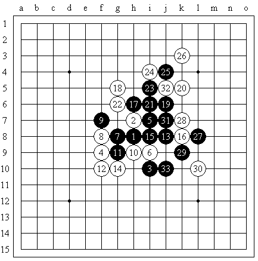

五林路上--记江苏五子棋首次组队参加全团赛(3)
#1 五林路上--记江苏五子棋首次组队参加全团赛(3)作者：小丸.net 发表时间：2008-6-17 14:26:55
第三篇 一队力克邯郸军 少帅计灭浙小天
太累了，一早被小牛和大鱼从床上拖起来拍裸照，真是过份――
觉得那里的早餐不错，牛奶，面包，鸡蛋，米粥，丸子,土豆，小牛，狮子……就是，味道不怎么样。
早餐时，忽然接到了棋院综合发展部主任徐炳继的电话，说要我代表棋手上去发言，发言稿已经准备好了，我又一次无语。
早餐结束，在比赛楼的大门口碰到了罗锦伟和 #2 Re:五林路上--记江苏五子棋首次组队参加全团赛(3)作者：励精 发表时间：2008-6-17 22:11:50 期待中...... 继续下去。 #3 Re:五林路上--记江苏五子棋首次组队参加全团赛(3)作者：小丸.net 发表时间：None 长考20分钟,无奈的把下面交换掉,上面最后没有没有逃掉被V的可能.到27后,兵败投降. 
第一轮 康岩 Vs 谢维详 山月交换 5a=7 黑27白投了
战后分析白8后黑简单VCT必胜.
我投子的那一刻,看到了旁边小天的笑容,然后过了几秒钟笑容没了,再过几秒钟,脸似乎是变绿了,我记得小奚昨天晚上准备了一晚上,难道是小天是中了他的研究什么的,不会啊,是小天开局,怎么可能呢?
很不情愿的的离开了赛场,在外面等待着里面的消息.不一会儿,少帅和小天出来了,小天一副哭丧着脸,好像伟鬼欠他三百头猪一样的.
少帅第一句开口就对我说:我把小天给灭了.他跳进了我挖的井~~~
这句话,一下子让整个赛场外面炸开了,新秀少帅灭了研究高手小天的消息一下子在整个赛区的外面炸开了,这无非是一个冷门,一个大冷门~~
引用小天博客里对这件事的描述:
by:web版  IP：
已记录
IP：
已记录
#4 Re:五林路上--记江苏五子棋首次组队参加全团赛(3)作者：屏蔽 发表时间：2008-6-18 1:07:06
期待下一篇吧~看看我那盘棋是多么的郁闷……#5 Re:五林路上--记江苏五子棋首次组队参加全团赛(3)作者：牛牛 发表时间：2008-6-23 10:30:08
 还说我们过分呢,再不起床,你要不洗脸,不刷牙,不梳头,不大小便,不穿衣服,不吃早饭才能改上早上第一轮了
还说我们过分呢,再不起床,你要不洗脸,不刷牙,不梳头,不大小便,不穿衣服,不吃早饭才能改上早上第一轮了